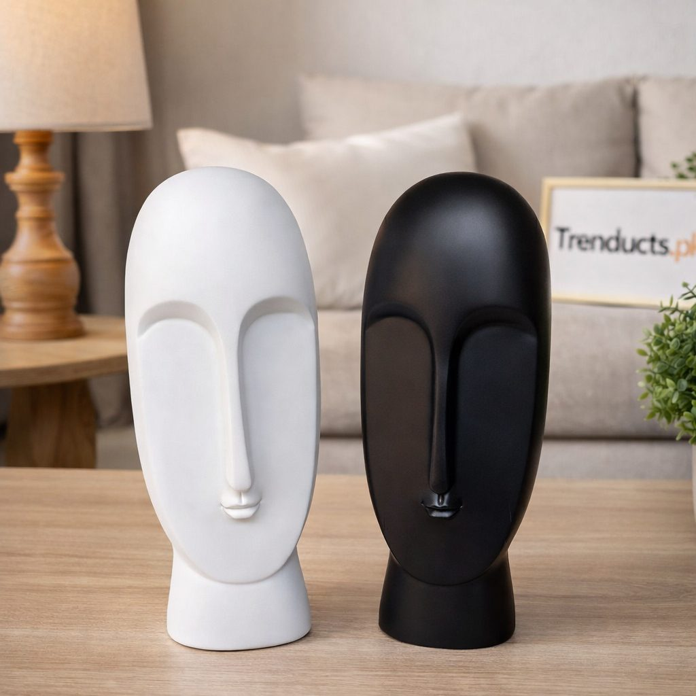
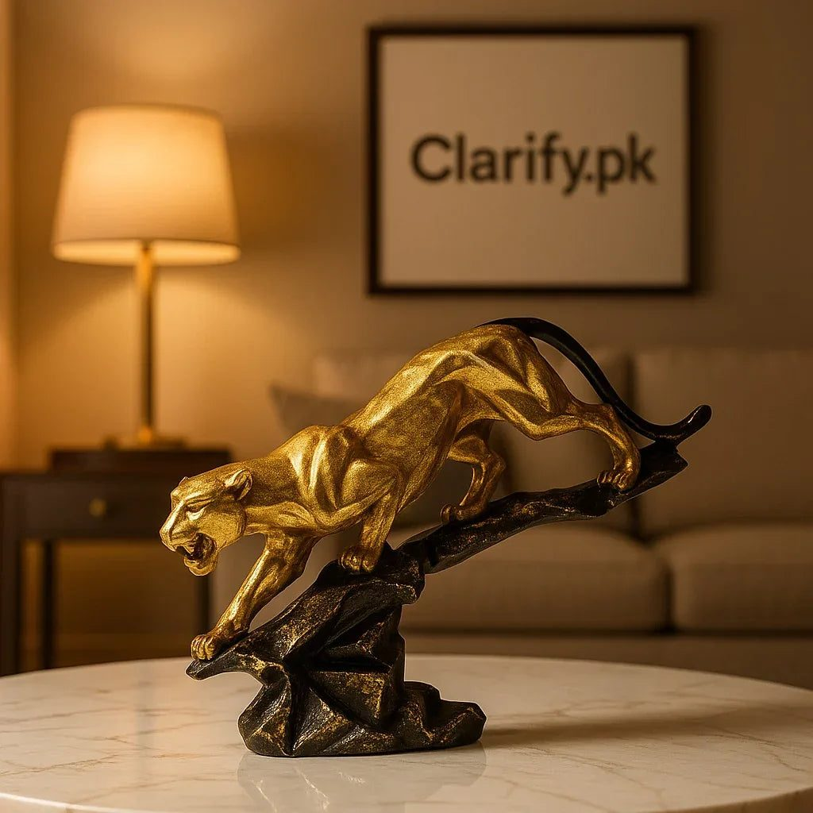

The entrance is the first thing a guest sees in your home, and in Pakistan guests are frequent. Relatives drop by, neighbours bring a dish of something, and during Eid the door barely stays closed. Yet in many homes the entrance is where things pile up: car keys, shopping bags, a stack of mail and somebody's shoes.
A console table, styled well, turns that space into a small welcome. It does not have to be expensive or elaborate. It just needs a plan.
Function first
Before decorating, decide what the table needs to do every day. Most entrances need a place for keys, a spot for sunglasses or a wallet, and somewhere to put down a bag while you take off your shoes. Give those jobs a home first: a small tray or bowl for keys, a drawer or basket below for anything else. If daily clutter has a place, the decor stays visible.

The rule of three heights
Designers often group objects at different heights so the eye moves across the table. A simple approach is:
- One tall item, like a lamp, a tall vase or a mirror on the wall above.
- One medium item, such as a sculpture or a framed photo.
- One low item, like a decorative tray, a bowl or a stack of books.
Arrange them slightly off-centre rather than lined up like soldiers. Odd numbers of objects usually look more natural than even ones.
Choosing a sculpture
A single sculptural piece gives a console table character. Abstract forms suit modern interiors with clean lines. Animal figures, like a panther or a horse, add drama and work well against a plain wall. Gold and metallic finishes catch the light near a door and look good in the evening.
Keep scale in mind. A tiny figure on a long table looks lost, while something too large crowds the space and gets knocked by bags. Measure the table depth and leave room to put things down.
Light matters at the door
Entrances are often dim, especially in flats with interior corridors. A table lamp with a warm bulb makes the space welcoming in the evening and helps when you are searching for keys. If you have a mirror above the table, the lamp's light reflects and makes a small hallway feel larger.

Add something personal
Decor shops can supply beautiful objects, but a console table feels like home when it includes something of yours: a framed family photo, a small calligraphy piece, a bowl you brought back from a trip to Hunza or a gift from a wedding. One personal item beside a couple of decor pieces is enough.
Mind the practical details
An entrance gets dust and traffic. Choose pieces that are easy to wipe, and avoid fragile items right at the edge where a swinging bag could knock them over. If you have small children, keep heavy sculptures towards the back or the wall side. A small runner under the arrangement protects the table surface from scratches and makes cleaning quicker.
Seasonal touches
Changing one or two items with the seasons keeps the entrance fresh. In Ramzan, a lantern or a small crescent decoration. At Eid, fresh flowers or a tray of sweets for visitors. In winter, a candle holder and a warmer-toned throw on a nearby chair. Keep the base arrangement and swap only the accent.
Avoiding clutter creep
Once a month, clear the table completely, wipe it down and put back only what belongs. Return stray items to their rooms. This takes five minutes and stops the table from sliding back into being a drop zone.
Finding pieces
If you are starting from scratch, look for one statement piece and build around it. The sculptures and accent pieces on Trenducts.pk include abstract, animal and metallic designs that suit a console table, with delivery across Pakistan.
The welcome guests remember
A thoughtful entrance tells visitors that they are expected and welcome. With a clear spot for daily essentials, three objects of different heights, a warm light and one personal touch, even a narrow hallway can make a lovely first impression.